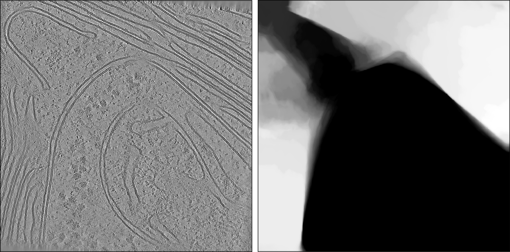

Chloroplasts (EMPIAR-11830)
In this tutorial we will prepare a network to segment chloroplasts in C. reinhardtii tomograms, using data from EMPIAR-11830. We assume you know the basics of training in Ais (if not, see the quick start tutorial) and demonstrate some more involved steps that help you get to a good network. We will also do most steps (label extraction, training, inference) from the command line interface instead of the GUI - the only thing you need the GUI for is annotation, and all the rest is easier via the CLI.
1. Downloading the data
We've selected 50 tomograms from the denoised set of EMPIAR-11830, which all contain chloroplasts. Use the below script to download the data - it's about 100 GB worth of volumes. When the first few volumes are done downloading you can continue to step 2 and leave the rest to download in the background.
import os
import urllib.request
from tqdm import tqdm
URL = "https://ftp.ebi.ac.uk/empiar/world_availability/11830/data/cryocare_bin4/{}.mrc"
TOMOS = [187, 1392, 164, 1347, 26, 1103, 1367, 1635, 2433, 540,
1343, 384, 451, 2312, 431, 2140, 2393, 2010, 311, 2424,
184, 1886, 142, 335, 2225, 574, 2900, 2654, 1728, 2146,
299, 298, 156, 1002, 29, 1185, 2917, 23, 423, 448,
1486, 1285, 2167, 2936, 2660, 1688, 1181, 2258, 1674, 473]
root = os.path.dirname(os.path.abspath(__file__))
os.makedirs(os.path.join(root, "tomograms"), exist_ok=True)
for i, n in enumerate(TOMOS, 1):
out = os.path.join(root, "tomograms", f"{n}.mrc")
if os.path.exists(out):
continue
with urllib.request.urlopen(URL.format(n)) as r, open(out + ".part", "wb") as f:
with tqdm(total=int(r.headers["Content-Length"]), unit="B", unit_scale=True, desc=f"{i}/{len(TOMOS)} {n}.mrc") as bar:
while chunk := r.read(1 << 20):
f.write(chunk)
bar.update(len(chunk))
os.replace(out + ".part", out)
2. Training a small model to help with annotation
2.1 Annotating chloroplasts
Launch Ais and open up 5 of the tomograms. Open the feature library and add a new preset called 'Chloroplast'. Generally this is a good time to think about the box size that you will annotate and the pixel size at which to train and run inference. Chloroplasts are big, so we can probably get away with doing inference at 30 or maybe even 50 A/px, and to train that well we will need to annotate fairly large boxes. We set the box size to 512. The tradeoff here is between how much detail is visible, and the size of the field of view the model sees during training. For fine-grained features like ribosomes or membranes, we tend to annotate smaller boxes (128 - 160 px, at 10 A/px), while for larger features like mitochondria or chloroplasts we would annotate larger boxes (256 - 512 px, and extract these with some downsampling).
Box size, pixel size, and field of view
When extracting training data, you can choose at which pixel size to do this. You also choose a box size to extract. Together these determine the size of the field of view that the model sees during training; in turn, this determines how well the resulting model is able to use spatial context in inference. In principle it does not matter what the pixel size of the tomograms is when you annotate them. If for example you annotate 128-sized boxes on a pixel size of around 7.2 - 7.4 A/px, and then extract 128-sized boxes with pixel size 10.0, that's completely fine: although you're extracting a little bit beyond the box you annotated, Ais automatically sets a loss-mask for this margin to ensure that the region you did not annotate is not used for scoring during training.
With the Chloroplast preset made, we annotate a few slices in each of the 5 tomograms we just opened and place boxes. When you're done with a tomogram - let's say after placing about 10 boxes - use ctrl + S to quick-save the annotations. That creates a .scns file in the same directory as the original .mrc. When you revisit your annotations, you can open these .scns files to continue where you left off.
Setting up the chloroplast preset and annotating the first tomograms.
2.2 Extracting training data
With the tomograms at mixed pixel sizes of 7.28 or 7.84 A/px, the 512-px box has a physical extent of 3700 - 4000 A. If we extract training data at 40 A/px and with a box size of 128, we would be extracting a box that is slightly larger than what we just annotated. That's fine, because Ais writes an 'ignore label' for any region outside the annotated box, so that margin adds spatial context but is not scored during training. In fact, when you're training a model for something that is difficult to annotate, it can help to set the annotation box size to something small - maybe 32, or 64 - and to extract a box that's much larger than that. That way you get a lot of extra spatial context, while still only having to annotate a small box.
In the command line interface, you can use ais extract to extract the training data:
ais extract --features Chloroplast --data_directory tomograms/ --output_directory . --box-size 128 --box-depth 1 --apix 40.0
scanning 5 annotated tomograms for 1 features...
scanning tomograms: 100%|██████████████████████████████████████████████████████████████████████████| 5/5 [00:00<00:00, 10.52tomo/s]
Chloroplast: 39 boxes found in 5 tomograms
extracting 39 boxes using 16 process(es)...
extracting Chloroplast: 100%|██████████████████████████████████████████████████████████████████████| 39/39 [00:14<00:00, 2.60box/s]
Chloroplast: 39 training boxes - saving as 128x128x1_40.00Apx_Chloroplast.scnt
If you want to use exactly the training data we prepared, you can download the resulting file: 128x128x1_40.00Apx_Chloroplast.scnt (5 MB).
2.3 Training the model
Training via the command line with ais train is also a bit more versatile and powerful than doing it in the GUI. Although we normally use VGGNet M for a quick model with little training data, for this training dataset we found that UNet M worked much better. Generally if you're not sure which network to use, we would recommend training multiple different architectures and testing which is best in the GUI. The main thing we're looking at now: inference in the GUI should be fast, because we want to use the model to help us annotate more training data, and should be at least somewhat accurate. It doesn't have to be perfect. If your version of Ais lacks UNet M, you can use UNet L or VGGNet M; run ais train -models to see which architectures are available.
Use the command below to train a network. Note the -gpu 0,1,2,3 argument - if you have more or fewer GPUs, adapt the list of numbers to your case. With four A100 GPUs (which is total overkill for this training run, by the way; a simple laptop GPU would have also worked) the training completed in 90 seconds.
ais train -a 'UNet M' -t 128x128x1_40.00Apx_Chloroplast.scnt -gpu 0,1,2,3 -name Chloroplast -augment -e 70
Testing this model on some unseen tomograms, we can see that it already produces useful output. It just needs a little bit of polishing.
Testing the preliminary model on tomograms that were not used for training. Output isn't perfect, but with a bit of proofreading and editing it will be useful additional training data.
3. Training a good model to segment all data
3.1 Creating a much larger training dataset
The remaining tomograms will have mostly finished downloading by now. In general it is best to sample training data in many different tomograms, rather than sampling a lot in only a few tomograms. So with the preliminary model in place, we'll open up 20 more tomograms and add more annotations in each of them. We specifically pay mind to the regions where our preliminary model's output is not so good, and use model-assisted annotation so that we don't have to draw everything from scratch.
After about 30 minutes, we had annotations in place for 25 tomograms. You can download our annotations here, as 25 separate .scns annotated-tomogram files. Because .scns files are softlinked to the corresponding .mrc files, you may have to fix a missing link when you open these files in Ais. To do so, open the 'File manager' (Settings > File manager > Open file manager) and use the Find & Replace tool to edit the .mrc file path.
Browsing the Chloroplast annotations. Across 25 tomograms, we placed 266 boxes in ~70 different slices.
Using your own annotations or ours, extract the updated training data. Now that we have many more annotations, we'll aim to export data for a final model rather than for a quick & small one to help with the annotation. By setting the box depth to a value larger than one, we can train a 2.5D or 3D model instead of a 2D one. Unlike a 2D model, these can use context in Z, which allows for more accurate output:
ais extract --features Chloroplast --data_directory tomograms/ --output_directory . --box-size 128 --box-depth 16 --apix 40.0
scanning 25 annotated tomograms for 1 features...
scanning tomograms: 100%|████████████████████████████████████████████████████████████████████████| 25/25 [00:00<00:00, 55.63tomo/s]
Chloroplast: 266 boxes found in 25 tomograms
extracting 266 boxes using 16 process(es)...
extracting Chloroplast: 100%|████████████████████████████████████████████████████████████████████| 266/266 [00:36<00:00, 7.27box/s]
Chloroplast: 266 training boxes - saving as 128x128x16_40.00Apx_Chloroplast.scnt
3.2 Training a 3D network
There are no major differences between 2D and 2.5D networks, but true 3D networks do use a different architecture. In Ais, 3D architectures have the tag '3d' in their name; currently, you'll find ezm-3d-M and ezm-3d-L. You can think of these as the counterparts to the UNet or VGGNet sets of networks, with M a 19.6 million parameter network and L 31.0 million parameters and the largest receptive field for a 3D network (266 px in XY, 74 in Z).
Let's try to train a 3D network to segment chloroplasts using the training data that we extracted with --box-depth 16. Note that the annotations for these training samples are still in 2D only - you don't need to annotate all 16 slices. We can train a 3D network using just 2D supervision (augmentations during training ensure that the 3D convolutions still learn something meaningful):
ais train -a 'ezm-3d-L' -t 128x128x16_40.00Apx_Chloroplast.scnt -gpu 0,1,2,3 -e 100 -augment -name Chloroplast
Using 4 A100 GPUs, this took around 30 minutes.
3.3 Applying the 3D network
We could open this network in the Ais GUI again and assess the output, but testing a model one slice at a time can be a little bit cumbersome, especially for a relatively large model like the one we just trained. Instead, we can also just apply the model to all of the data and visualize how well it segments chloroplasts. We use the ais segment command:
ais segment -m Chloroplast.scnm -gpu 0,1,2,3 -d tomograms/ -ou segmented/
Using the same 4 A100 GPUs as for training, segmentation took just under 5 minutes (~6 seconds per tomogram).
3.4 Visualizing the results
Inspecting 50 segmentation volumes one-by-one and by hand is laborious, so instead we'll show you how to use Pom, a tool to organise and visualize large scale segmented datasets. Run pom initialize to see if it is already installed. If not, follow these instructions to install Pom. After installation, we tell Pom where our tomograms and segmentations are:
pom initialize
pom add_source -t tomograms/ -s segmented/
And then set up the Pom database and generate some images:
pom summarize
pom projections
To explore the database:
pom browse &
In the Gallery, you can sort tomograms by how much of their volume is occupied by Chloroplast - or at least, how much Chloroplast our network thinks is there. You can also toggle back and forth between seeing the tomogram density and the corresponding chloroplast segmentation.
Exploring segmentation results in Pom, showing first the Gallery, then a tomogram detail page, and finally the Visualization settings page where we set up a 3D visualization to render with pom render.
On the Visualization settings page (see video above), you can set up a scene for 3D rendering. Give chloroplasts some colour, choose whether to render them as isosurface meshes or ray-traced volumes, and add the feature Chloroplast to the default 'thumbnail' composition. Then back in the terminal, run:
pom render
Now back in the browser app you can see the resulting 3D visualisations alongside the tomogram previews.
3.5 Final proofreading & corrections
You can probably spot some mistakes in the 3D network's segmentation output as you browse them in the Pom app. For example, for our network, the top-left corner in tomogram 1728 was not correctly segmented:

To fix that, we can just sample some more training data in that specific area. Open the Ais GUI again, and in Settings > Pom, activate Synchronize Ais and Pom. If you are running Pom and Ais on the same system, you can ignore the Set command directory setting; if you are running Pom on a cluster, and the Ais GUI locally, set the command directory to some directory that both systems have access to (do this for both the locally running Ais, and on the cluster, either via the Ais GUI or in ~/.Ais/settings.txt). Pom writes a little file called ais_to_pom.cmd to this directory, which Ais reads and executes.
With that set, the 'open in Ais' button in the Pom browser should now work (if this button is not visible: Pom only shows it if Ais is available in the same environment from which you run Pom). For any tomogram where you see the network needs to be improved, you can now open it in Ais from the Pom app and do the required extra bit of annotation.
We added annotations for just 4 tomograms. With those saved, we then extract the updated training data one last time:
ais extract --features Chloroplast --data_directory tomograms/ --output_directory . --box-size 128 --box-depth 16 --apix 40.0
And rather than training a new model from scratch, we use the previous model as the starting point - most of the training data is still the same, anyway:
ais train -m Chloroplast.scnm -t 128x128x16_40.00Apx_Chloroplast.scnt -gpu 0,1,2,3 -e 50 -augment -name Chloroplast_v2
And after about 15 minutes of training, let's segment for the last time. We'll set the test-time augmentation (tta) count to 4 this time - if you want to compare the new and previous model more directly, leave it at 1 as before:
ais segment -m Chloroplast_v2.scnm -d tomograms/ -ou segmented/ -gpu 0,1,2,3 -tta 4
When that run completes, you could re-run pom summarize; pom projections; to include the new results in the Pom app as well. Because we named the model Chloroplast_v2, the output segmentations will be called something like 0001__Chloroplast_v2.mrc and sit alongside the previous 0001__Chloroplast.mrc, so that both will show up in Pom and can be easily compared.
4. Visualizing chloroplasts in cells
Ais segmentations are conventional .mrc files and can be plugged straight into any tool that uses segmentations. For now, we'll just use the model for visualization, in combination with the easymode mitochondrion and cytoplasm models, so that we can show these three major compartments at a glance:
easymode segment mitochondrion cytoplasm --data tomograms --output segmented
When that's done, we re-run pom summarize and pom projections and set up a new 3D visualization in the Pom app.
3D visualizations of chloroplasts using our Ais model, along with cytoplasm and mitochondrion segmented by easymode general networks.
Summary
In this tutorial we covered:
- extracting training data from the command line with
ais extract - extracting beyond what you annotated: a larger box than the one you drew in, or a 3D slab around a 2D annotation
- training a model from the command line with
ais train - segmenting a full dataset with
ais segment - iteratively improving a network: a quick model to speed up annotation, training your working model, review in Pom, proofreading & extra annotation, and continuing training with a previously generated model